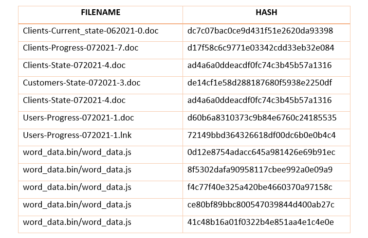

ALGUNOS DE LOS PRINCIPALES ACTORES DE AMENAZA
ALGUNOS DE LOS PRINCIPALES ACTORES DE AMENAZA
Un actor de amenazas, también conocido como actor malicioso, es cualquier persona u organización que intencionalmente causa daño en la esfera digital. Aprovechan las debilidades de las computadoras, las redes y los sistemas para llevar a cabo ataques disruptivos contra individuos u organizaciones. Aquí te mostramos algunos de los principales y más peligrosos actores de amenazas
También conocido como: Anunak, Carbanak, FIN7, Gold Niagara, Calcium
Aparición: 2013
Origen: Rusia
Detalles:
Carbon Spider es uno de los esquemas de malware más sofisticados y agresivos de los últimos tiempos, que consiste en docenas de piratas informáticos talentosos ubicados en el extranjero. Carbon Spider utiliza un arsenal de herramientas de malware y técnicas de piratería en constante evolución, y controla las computadoras infectadas a través de una compleja red de servidores ubicados en todo el mundo. Los autores intelectuales detrás del criminal.
La empresa creó un negocio de seguridad informática falso llamado Combi Security, que utilizaron para reclutar nuevos miembros y agregar un velo delgado de legitimidad al esquema de piratería. Sin embargo, no había nada legítimo en las decenas de ataques que Carbon Spider lanzó contra más de 100 víctimas desprevenidas.
Países afectados: Australia, Austria, Brasil, Bulgaria, Canadá, China, República Checa, Francia, Alemania, Hong Kong, Islandia, India, Luxemburgo, Marruecos, Nepal, Noruega, Pakistán, Polonia, Rusia, España, Suecia, Suiza, Taiwán, Reino Unido , Ucrania, Estados Unidos, Uzbekistán.
Objetivos: se dirige a empresas: en particular, restaurantes de comida rápida e informales, hoteles, casinos y aquellos con una alta frecuencia de transacciones en el punto de venta.
Ataques Realizados más conocidos:
Ataque a Oil India, en abril de 2022 fue víctima del Ransomware Revil el cual es atribuido a este grupo de amenaza, el ataque afectó los sistemas de TI y las computadoras en la oficina central las cuales fueron cerradas.
Ataque al oleoducto más grande de Estados Unidos, Colonial Pipeline y que provocó escasez en el suministro en la costa este del país durante varios días, en mayo de 2021 utilizando el ransomware Darkside.
Ataque a las tiendas Saks Fifth Avenue y Lord & Taylor en mayo de 2017, les robaron información de tarjetas de crédito y débito de millones de consumidores utilizando técnicas de phishing y malware.
Ataque a la cadena de alimentos Burritos Chipotle en febrero de 2017, este grupo de amenaza usó su malware POS para robar los datos de las tarjetas de pago de los clientes de la empresa.
Técnicas, Tácticas y Procedimientos:
Acceso inicial
Usa campañas de spear-phishing con archivos adjuntos integrados con exploits como punto de entrada al sistema de destino.
Ejecución
Entrar con éxito en el sistema conduce al siguiente paso: ejecutar el ataque. Para la ejecución de código y comportamiento, este grupo usa una variedad de técnicas a través de API nativa, PowerShell, ejecución de servicios, ejecución de usuarios, Modelo de objetos de componentes de Windows (COM) y COM distribuido, e Instrumental de administración de Windows (WMI).
También abusa de la interfaz de línea de comandos y del protocolo cliente-servidor DDE, por otro aprovecha Mshta, una utilidad que puede ejecutar VBScript y tareas programadas para ejecutar código malicioso en los sistemas de los usuarios.
Persistencia
Una vez que se ejecuta el comportamiento malicioso, los atacantes intentarán mantener su presencia en un sistema. Para mantener la persistencia, los grupos crean nuevos servicios. También agregan programas a una carpeta de inicio a la que se puede hacer referencia con una clave de ejecución del registro. Se detectó una variante del malware Carbanak que agrega entradas y claves de registro como técnica de inicio automático. También se abusaron de las credenciales de cuentas válidas existentes.
En el caso de Carbon Spider, el uso de bases de datos de shimming de aplicaciones (que pueden permitir a los desarrolladores aplicar correcciones a las aplicaciones sin tener que reescribir el código) y procesos de enganche que permiten modificar el comportamiento de los programas son algunas de las técnicas que se pueden aplicar. El primero se ha utilizado en una campaña relacionada con el malware Pillowmint.
Escalada de privilegios
Algunas funciones necesarias para el ataque requieren privilegios de administrador. Para elevar los privilegios, los grupos eluden los mecanismos de Control de cuentas de usuario (UAC) de Windows, los nuevos servicios y las cuentas válidas para elevar los privilegios del proceso.
Con el mismo fin, en sistemas Linux, los ataques de Carbon Spider pueden utilizar sudo , un programa que permite a los usuarios ejecutar los programas de un super-usuario. Por otro lado, también pueden inyectar código en los procesos y secuestrar el orden de búsqueda utilizado para cargar archivos DLL .
Evasión de defensa
Después de una serie de comportamientos maliciosos, los atacantes deben permanecer sigilosos y pasar desapercibidos mediante el uso de soluciones de seguridad que puedan eliminar las amenazas del sistema. Para la evasión de la defensa, ambos grupos crean o adquieren herramientas para la firma de código del malware, o desofuscan o decodifican archivos o información mediante el uso de funciones o utilidades de malware en el sistema. Este grupo también emplea el enmascaramiento para hacer que las características parezcan benignas para las soluciones de seguridad, la ofuscación de archivos o información para hacer que estos archivos e información sean difíciles de descubrir, el empaquetado de software para ocultar el código y la inyección de procesos para evadir la defensa basada en procesos.
Carbon Spider utiliza medidas de protección para restringir la ejecución y las utilidades abusadas que permiten la ejecución indirecta de comandos que pueden superar las restricciones de seguridad. El grupo también evade la virtualización y los espacios aislados e inyecta código malicioso en procesos vacíos para esquivar las defensas basadas en procesos.
Acceso a credenciales
Algunas partes del sistema están protegidas por credenciales. Para robarlos, este grupo emplea el dumping de credenciales y la captura de entrada . Involucrando credenciales que generalmente tienen forma de hash o texto claro, o también API o portales web.
Carbon Spider también realiza tácticas de fuerza bruta o aprovecha las credenciales que se guardan en los navegadores web.
Descubrimiento
Para la fase de descubrimiento, las campañas de Carbon Spider obtienen más conocimiento sobre el sistema mediante la recopilación de listas de diversa información: ventanas de aplicaciones abiertas , procesos en ejecución , direcciones IP y otros identificadores de red en sistemas remotos , información detallada del hardware y del sistema , configuración de la red del sistema y configuraciones y propietarios y usuarios del sistema.
Carbon Spider también recopila información sobre cuentas , archivos y directorios , permisos de grupo y registros . La información recopilada puede ayudar en el siguiente paso: el movimiento lateral.
Movimiento lateral
Para la fase de descubrimiento, las campañas de Carbon Spider obtienen más conocimiento sobre el sistema mediante la recopilación de listas de diversa información: ventanas de aplicaciones abiertas , procesos en ejecución , direcciones IP y otros identificadores de red en sistemas remotos , información detallada del hardware y del sistema , configuración de la red del sistema y configuraciones y propietarios y usuarios del sistema.
Carbon Spider también recopila información sobre cuentas , archivos y directorios , permisos de grupo y registros . La información recopilada puede ayudar en el siguiente paso: el movimiento lateral.
Recopilación
Después de moverse por la red e identificar los activos a los que apuntar, el siguiente paso sería recopilar datos clave. En la fase de recopilación, las campañas de Carbon Spider recopilan datos de fuentes del sistema local y a través de entradas y capturas de pantalla (como se realizó en una campaña relacionada con el malware Tirion).
Los ataques pueden organizar los datos recopilados en una ubicación particular en preparación para la exfiltración.
Comando y control
En los ataques de Carbon Spider la comunicación con los sistemas comprometidos de los usuarios se realiza eludiendo los firewalls o los sistemas de detección de red a través de los puertos de uso común , utilizando servidores proxy de conexión para evitar conexiones directas a la infraestructura del grupo de amenazas, empleando el canal de comando y control para controlar de forma remota copie archivos de un sistema externo, combinándolos con el tráfico de red existente mediante el uso del protocolo de capa de aplicación estándar y aprovechando el protocolo criptográfico estándar para disfrazar el tráfico de comando y control.
Las campañas también pueden usar programas legítimos y software de acceso remoto para comando y control. También emplean protocolos de capa de no aplicación estándar para la comunicación.
Exfiltración
En la fase final del ataque, los grupos filtran los datos robados al canal de comunicaciones normal a través de canales de mando y control .
Para las rutinas de ataque de Carbon Spider, los datos se pueden comprimir y/o cifrar antes de filtrarlos.
Indicadores de compromiso:

Dominios:
Recomendaciones:
Segmente la red para aislar TI y OT, limitando las conexiones de red solo a estaciones de trabajo de administración e ingeniería específicamente permitidas, lo que reduce la probabilidad de que el malware OT/ICS alcance su objetivo. Use una solución de monitoreo con capacidad de DPI compatible con OT para alertar sobre indicadores y comportamientos maliciosos, observando los sistemas internos y las comunicaciones en busca de acciones hostiles conocidas.
Supervise las amenazas internas, las grandes transferencias de datos y la actividad en las redes oscuras para evitar o mitigar la fuga de datos por parte de hacktivistas y grupos de extorsión de datos. Supervise las fugas de datos especialmente conocidas en busca de credenciales expuestas.
Utilice contraseñas seguras y únicas y emplee la autenticación multifactor siempre que sea posible para asegurarse de que las credenciales robadas no puedan usarse fácilmente en contra de su organización.
Siga la guía del NCSC-UK sobre ataques de denegación de servicio , que incluye comprender los puntos débiles de su servicio, asegurarse de que los proveedores de servicios puedan manejar el agotamiento de los recursos, escalar el servicio para manejar sesiones concurrentes, preparar un plan de respuesta y probar los sistemas con regularidad.
Identifique y parchee los dispositivos IoT vulnerables para evitar que se utilicen como parte de botnets DDoS. También cambie los valores predeterminados o las contraseñas fáciles de adivinar en estos dispositivos IoT.
Supervise el tráfico de dispositivos IoT para identificar aquellos que se utilizan como parte de ataques distribuidos.